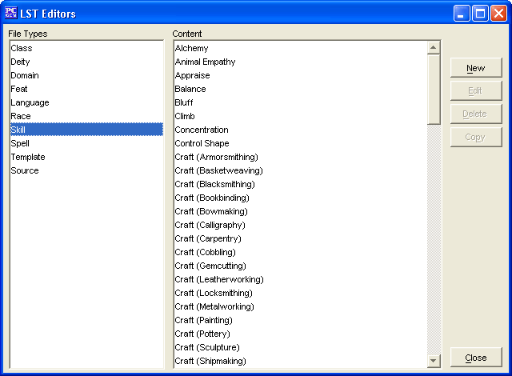

The Skill Editor is to create you own Skills, edit ones you have already made, and in the future will allow you to edit existing Skills (from other data/list files).
The New button will allow the creation of a new Skill.
The Edit button will allow you to edit the selected Skill (Skills created within this Skill Editor only at this stage).
The Delete button will remove the selected Skill (Skills created within this Skill Editor only at this stage).
The Copy button makes a copy of a selected Skill. In this way you can slightly modify an existing Skill and give it a new name.
The Close button will allow you to exit back to PCGen.
Skills added will be saved into the customSkills.lst file.